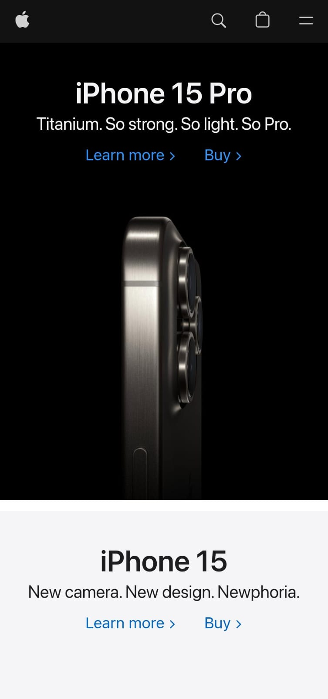

Alignment
Wizards of the Coast
Every element on the page should have a visual connection (Align) with another element, usually we use left align on desktop and center on mobile devices.
Contrast
Apple

Contrast is mostly used to emphasize the difference between selected elements, we can see how the text and the background work together so well.
Proximity
Dell
Proximity create less clutter on a page, and gives structure to the information you are displaying. We can appreciate well organize and clear the text is outside of the picture and in it.